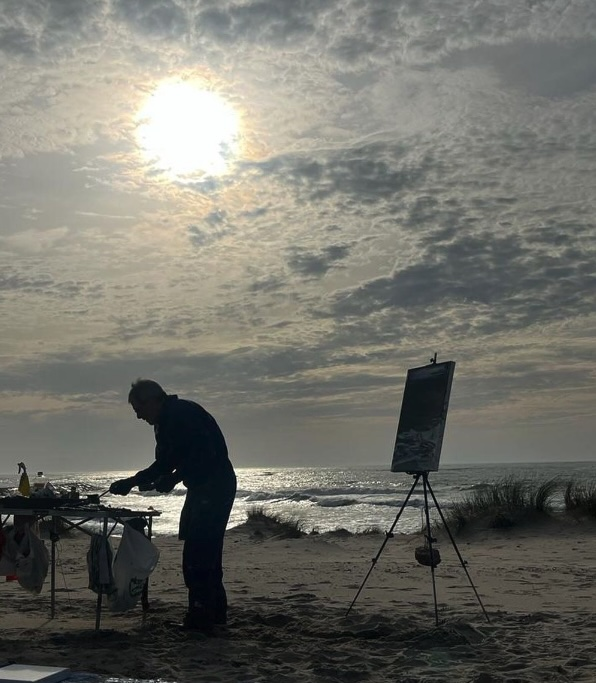

<!DOCTYPE html>
<html>
<head>
    
    <meta http-equiv="content-type" content="text/html; charset=UTF-8" />
    
        <script>
            L_NO_TOUCH = false;
            L_DISABLE_3D = false;
        </script>
    
    <style>html, body {width: 100%;height: 100%;margin: 0;padding: 0;}</style>
    <style>#map {position:absolute;top:0;bottom:0;right:0;left:0;}</style>
    <script src="https://cdn.jsdelivr.net/npm/leaflet@1.9.3/dist/leaflet.js"></script>
    <script src="https://code.jquery.com/jquery-3.7.1.min.js"></script>
    <script src="https://cdn.jsdelivr.net/npm/bootstrap@5.2.2/dist/js/bootstrap.bundle.min.js"></script>
    <script src="https://cdnjs.cloudflare.com/ajax/libs/Leaflet.awesome-markers/2.0.2/leaflet.awesome-markers.js"></script>
    <link rel="stylesheet" href="https://cdn.jsdelivr.net/npm/leaflet@1.9.3/dist/leaflet.css"/>
    <link rel="stylesheet" href="https://cdn.jsdelivr.net/npm/bootstrap@5.2.2/dist/css/bootstrap.min.css"/>
    <link rel="stylesheet" href="https://netdna.bootstrapcdn.com/bootstrap/3.0.0/css/bootstrap.min.css"/>
    <link rel="stylesheet" href="https://cdn.jsdelivr.net/npm/@fortawesome/fontawesome-free@6.2.0/css/all.min.css"/>
    <link rel="stylesheet" href="https://cdnjs.cloudflare.com/ajax/libs/Leaflet.awesome-markers/2.0.2/leaflet.awesome-markers.css"/>
    <link rel="stylesheet" href="https://cdn.jsdelivr.net/gh/python-visualization/folium/folium/templates/leaflet.awesome.rotate.min.css"/>
    
            <meta name="viewport" content="width=device-width,
                initial-scale=1.0, maximum-scale=1.0, user-scalable=no" />
            <style>
                #map_99f82a3305c9016df52f94e274c442db {
                    position: relative;
                    width: 100.0%;
                    height: 100.0%;
                    left: 0.0%;
                    top: 0.0%;
                }
                .leaflet-container { font-size: 1rem; }
            </style>
        
</head>
<body>
    
    
            <div class="folium-map" id="map_99f82a3305c9016df52f94e274c442db" ></div>
        
</body>
<script>
    
    
            var map_99f82a3305c9016df52f94e274c442db = L.map(
                "map_99f82a3305c9016df52f94e274c442db",
                {
                    center: [42.23282, -8.72264],
                    crs: L.CRS.EPSG3857,
                    zoom: 13,
                    zoomControl: true,
                    preferCanvas: false,
                }
            );

            

        
    
            var tile_layer_e147d38769a566cd8fd129e00a1ef195 = L.tileLayer(
                "https://tile.openstreetmap.org/{z}/{x}/{y}.png",
                {"attribution": "\u0026copy; \u003ca href=\"https://www.openstreetmap.org/copyright\"\u003eOpenStreetMap\u003c/a\u003e contributors", "detectRetina": false, "maxNativeZoom": 19, "maxZoom": 19, "minZoom": 0, "noWrap": false, "opacity": 1, "subdomains": "abc", "tms": false}
            );
        
    
            tile_layer_e147d38769a566cd8fd129e00a1ef195.addTo(map_99f82a3305c9016df52f94e274c442db);
        
    
            var marker_37e9f4169a59a59d5a328ef584265814 = L.marker(
                [42.2539207, -8.6805985],
                {}
            ).addTo(map_99f82a3305c9016df52f94e274c442db);
        
    
        var popup_881aa0f6c4af980c86a4982b8d971495 = L.popup({"maxWidth": 300});

        
            
                var html_f6a0ac81055d4c787d56825bdb925a50 = $(`<div id="html_f6a0ac81055d4c787d56825bdb925a50" style="width: 100.0%; height: 100.0%;">     <h4>Teis</h4>     <p>Nivel Sonoro: 0.02 dB</p>     <p>Características Bióticas: 20.82</p>     <p>Características Antropogénicas: 0.35</p>          <audio controls>       <source src="audio/bird.wav" type="audio/wav">       Tu navegador no soporta el elemento de audio.     </audio>     </div>`)[0];
                popup_881aa0f6c4af980c86a4982b8d971495.setContent(html_f6a0ac81055d4c787d56825bdb925a50);
            
        

        marker_37e9f4169a59a59d5a328ef584265814.bindPopup(popup_881aa0f6c4af980c86a4982b8d971495)
        ;

        
    
    
            var marker_95acb9d68c79e6e3aa5dba58faf2be55 = L.marker(
                [42.1979539, -8.6914617],
                {}
            ).addTo(map_99f82a3305c9016df52f94e274c442db);
        
    
        var popup_e46d49105005c4f9c45941879ee24a32 = L.popup({"maxWidth": 300});

        
            
                var html_0c4c83ff8a4b520711921d848c379ca8 = $(`<div id="html_0c4c83ff8a4b520711921d848c379ca8" style="width: 100.0%; height: 100.0%;">     <h4>Río Eifonso</h4>     <p>Nivel Sonoro: 0.02 dB</p>     <p>Características Bióticas: 20.82</p>     <p>Características Antropogénicas: 0.35</p>          <audio controls>       <source src="audio/bird.wav" type="audio/wav">       Tu navegador no soporta el elemento de audio.     </audio>     </div>`)[0];
                popup_e46d49105005c4f9c45941879ee24a32.setContent(html_0c4c83ff8a4b520711921d848c379ca8);
            
        

        marker_95acb9d68c79e6e3aa5dba58faf2be55.bindPopup(popup_e46d49105005c4f9c45941879ee24a32)
        ;

        
    
</script>
</html>